Hiện Vật Quý
Tiêu Đề Hiện Vật
Niên Đại
Mô tả hiện vật
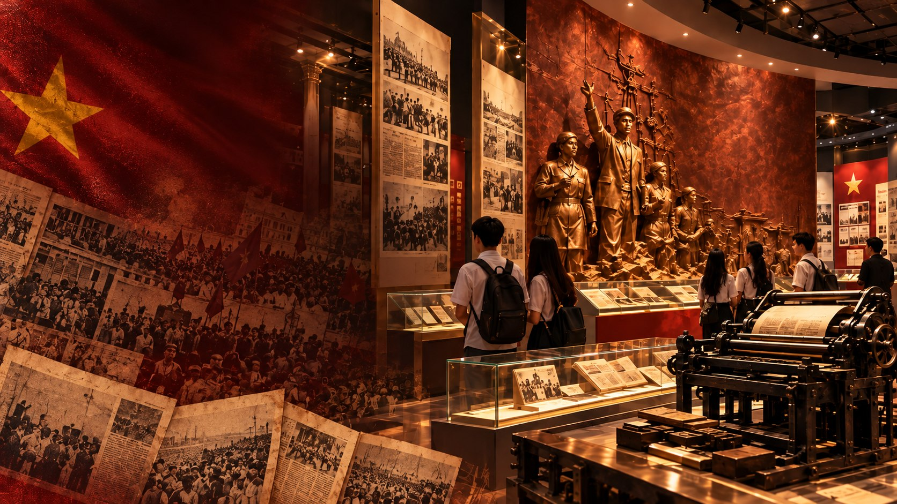
“Cán bộ báo chí cũng là chiến sĩ cách mạng. Cây bút, trang giấy là vũ khí sắc bén của họ.”
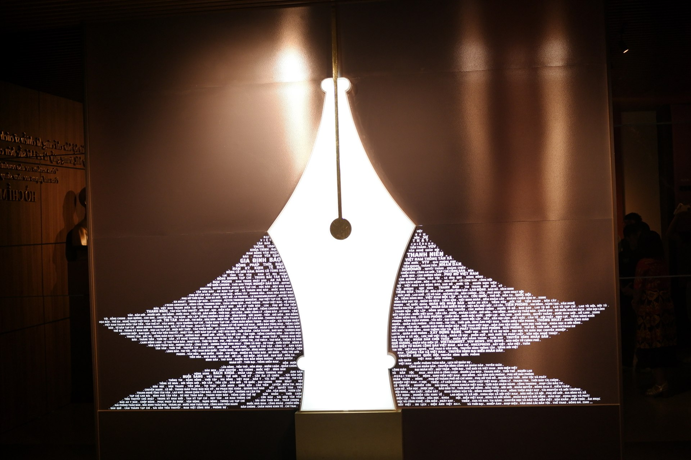
Hội tụ hơn 150 năm di sản vẻ vang của các thế hệ nhà báo Việt Nam dấn thân vì Tổ quốc.
Bảo tàng Báo chí Việt Nam được thành lập theo Quyết định của Thủ tướng Chính phủ, là thiết chế văn hóa trang trọng do Hội Nhà báo Việt Nam trực tiếp xây dựng và quản lý.
Trải qua chặng đường sưu tầm công phu khắp mọi miền đất nước và quốc tế, bảo tàng hiện đang lưu giữ hơn 20.000 hiện vật, ấn bản gốc, thiết bị tác nghiệp vô giá. Từ tờ báo Quốc ngữ đầu tiên năm 1865, qua các trang báo nhuốm máu lửa hai cuộc kháng chiến vĩ đại, cho đến dòng chảy báo chí số đương đại hôm nay.
Hàng ngàn bản báo gốc, bản thảo viết tay và kỷ vật độc bản của các nhà báo tiền bối.
Máy ảnh, máy in chữ chì, radio bán dẫn vượt mưa bom bão đạn bảo vệ sự thật.
Các cụm điêu khắc hoành tráng, tranh phù điêu đồng và biểu tượng ngòi bút rực rỡ.
Màn hình tra cứu số hóa, tư liệu tương tác và không gian tái hiện lịch sử sống động.
Những dấu ấn thiêng liêng và tầm vóc tư tưởng soi đường cho nền Báo chí Cách mạng Việt Nam
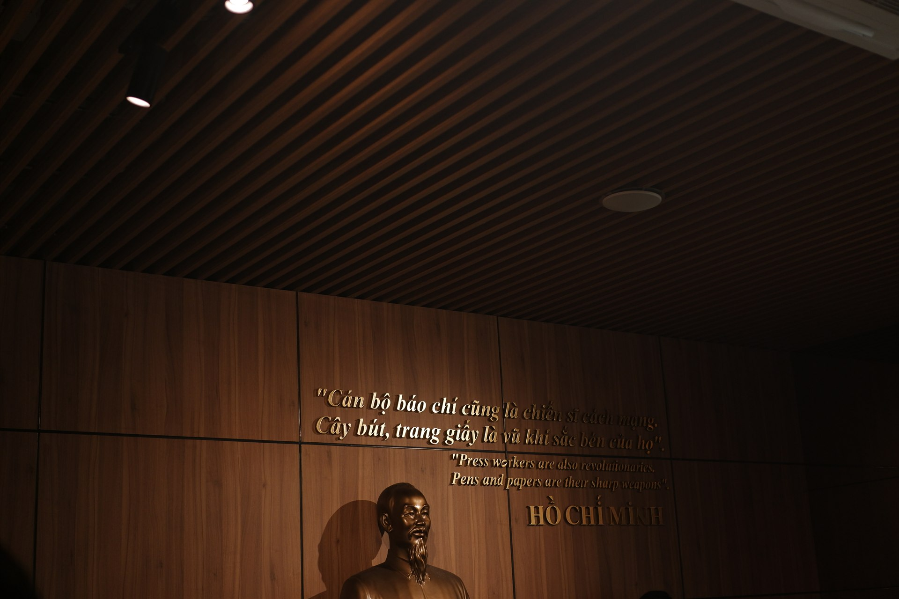
Trên nền vách gỗ nâu trầm ấm, những dòng chữ mạ vàng khắc ghi lời căn dặn thiêng liêng: "Cán bộ báo chí cũng là chiến sĩ cách mạng. Cây bút, trang giấy là vũ khí sắc bén của họ." Phía dưới là bức tượng đồng Chủ tịch Hồ Chí Minh trang nghiêm - Người sáng lập tờ báo *Thanh Niên* ngày 21/6/1925, khởi nguồn rực rỡ cho nền Báo chí Cách mạng Việt Nam.
Tác phẩm điêu khắc phát sáng khổng lồ mô phỏng hình ngòi bút máy vút cao, được kết thành từ hàng trăm tên tờ báo và cơ quan thông tấn qua các thời kỳ: Gia Định Báo, Tiếng Dân, Nhân Dân, Quân Đội Nhân Dân, Thông Tấn Xã, Đài TNVN... Biểu trưng cho ngọn đuốc tri thức và sứ mệnh phụng sự nhân dân.
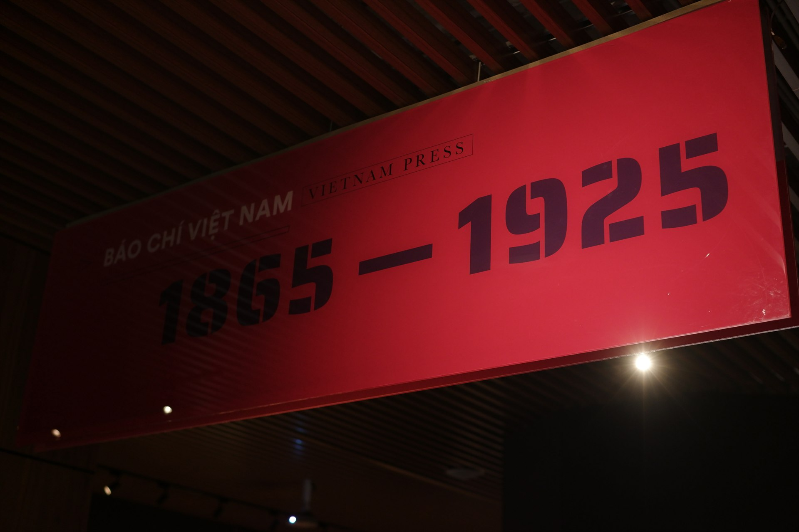
Biển hiệu sơn mài đỏ thắm định vị giai đoạn 60 năm lịch sử từ khi tờ báo chữ Quốc ngữ đầu tiên xuất hiện ở Nam Kỳ đến trước khi Báo chí Cách mạng ra đời. Không gian trưng bày tái hiện sống động những cuộc tranh luận báo chí, sự truyền bá chữ Quốc ngữ và bước ngoặt văn hóa xã hội Việt Nam.
Khám phá trọn vẹn toàn bộ các hiện vật, ấn bản quý hiếm và kỷ vật chiến trường được bảo tồn nghiêm ngặt tại bảo tàng
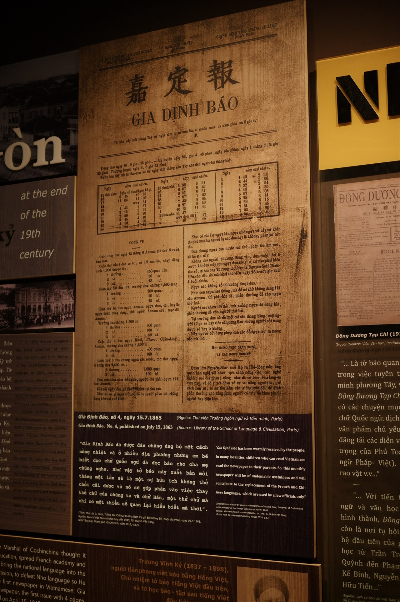
Tờ báo chữ Quốc ngữ đầu tiên của Việt Nam. Được người dân Nam Kỳ nồng nhiệt đón nhận, mở đường cho việc phổ biến chữ Quốc ngữ thay thế chữ Hán và tiếng Pháp.
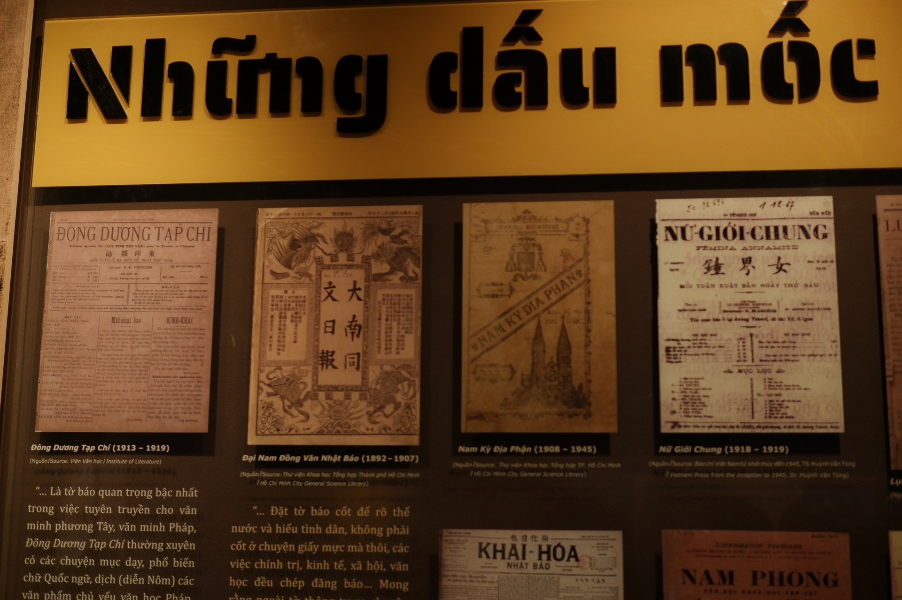
Bộ sưu tập các tờ báo danh tiếng: *Đông Dương Tạp Chí* (1913), *Đại Nam Đồng Văn Nhật Báo* (1892), *Nam Kỳ Địa Phận* (1908) và *Nữ Giới Chung* (1918) - tờ báo nữ quyền đầu tiên.
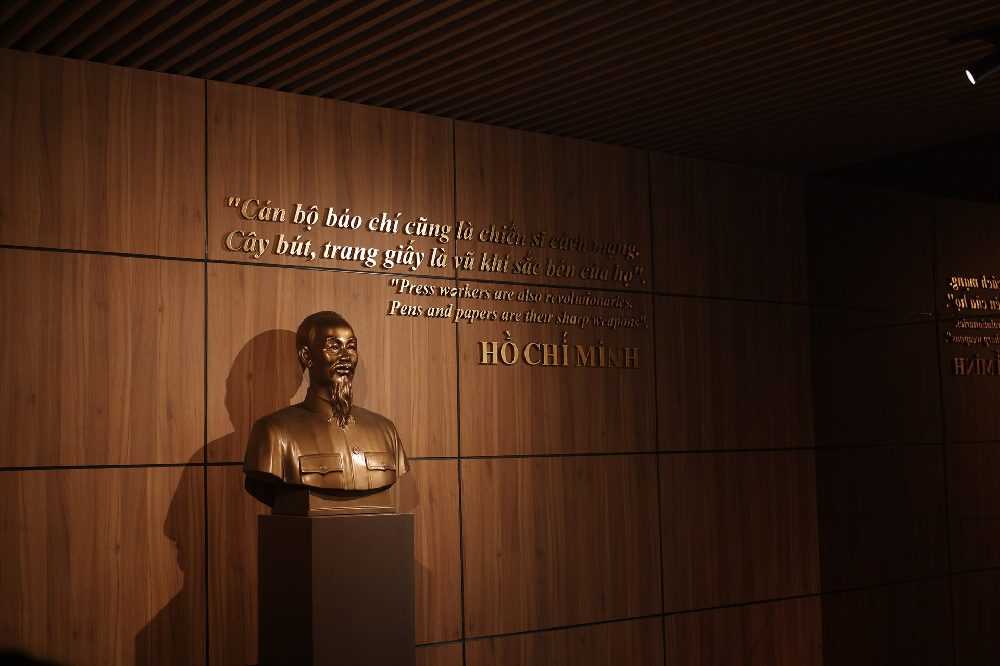
Nơi tri ân và tưởng nhớ Chủ tịch Hồ Chí Minh - Nhà báo vĩ đại, tấm gương sáng ngời của phong cách làm báo cách mạng giản dị, sâu sắc, sắc sảo và luôn gắn liền với vận mệnh đất nước.
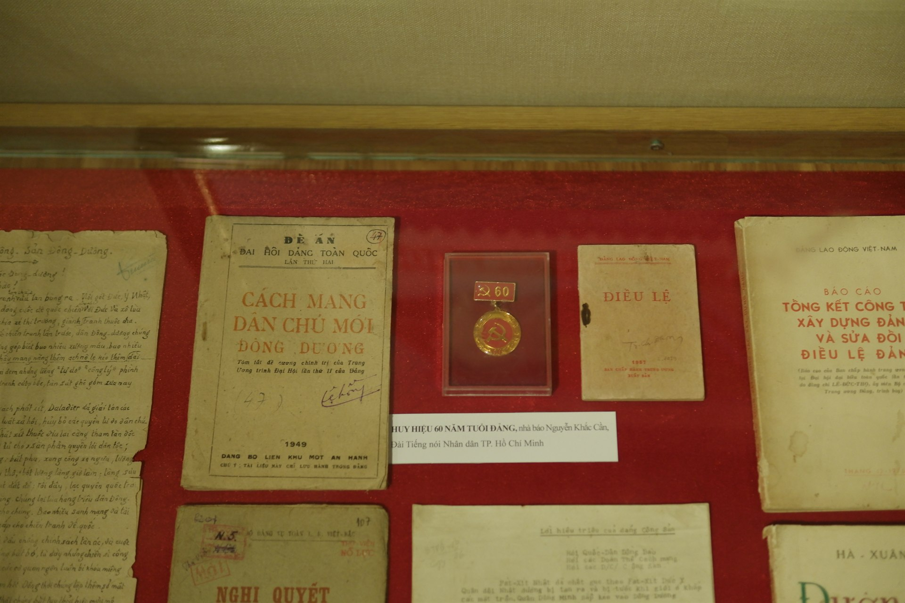
Kỷ vật thiêng liêng của nhà báo lão thành Nguyễn Khắc Cần (Đài TNND TP.HCM), cùng văn bản Đề án Cách Mạng Dân Chủ Mới Đông Dương xuất bản năm 1949 và Điều lệ Đảng thời kháng chiến.
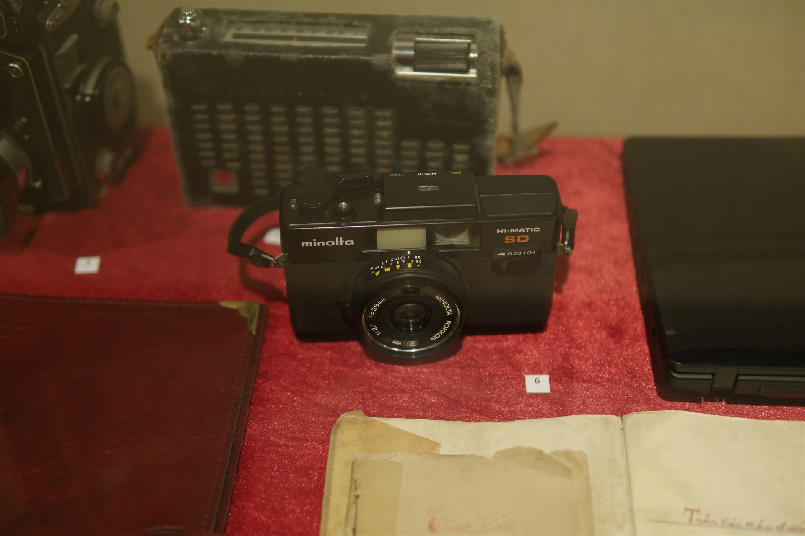
Chiếc máy ảnh nhỏ gọn cùng chiếc radio bán dẫn vỏ da nhuốm bụi thời gian. Những người bạn đồng hành của phóng viên chiến trường dưới làn bom đạn khốc liệt để ghi lại từng sự thật lịch sử.
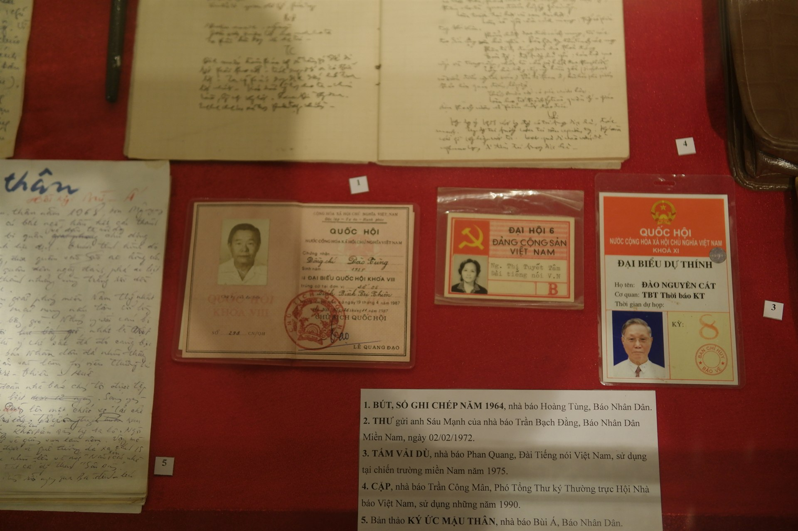
Sổ tay tác nghiệp của nhà báo Hoàng Tùng (Báo Nhân Dân), thư gửi anh Sáu Mạnh của Trần Bạch Đằng, cùng bản thảo viết tay rực lửa "Ký ức Mậu Thân 1968" của nhà báo Bùi Á.
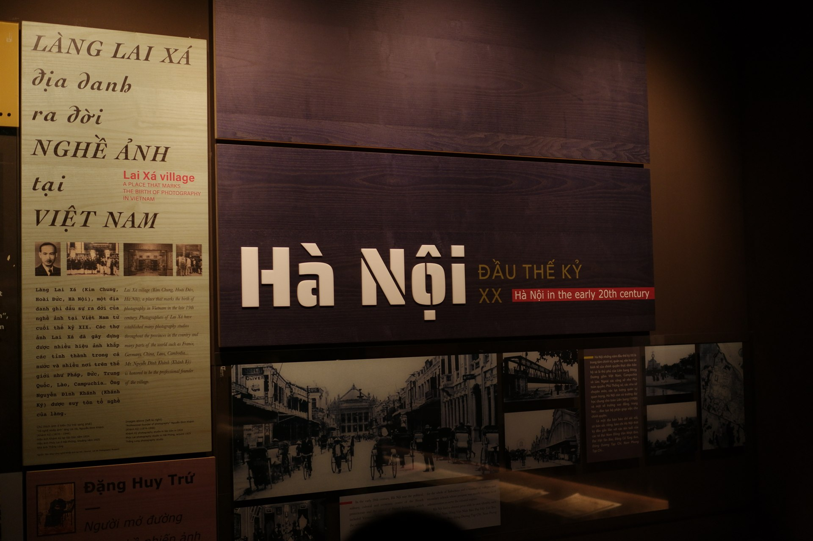
Không gian tái hiện cội nguồn nghề ảnh Việt Nam tại làng Lai Xá, công lao cụ Đặng Huy Trứ và cụ Nguyễn Đình Khánh, cùng những bức ảnh quý ghi dấu diện mạo thủ đô Hà Nội xưa.
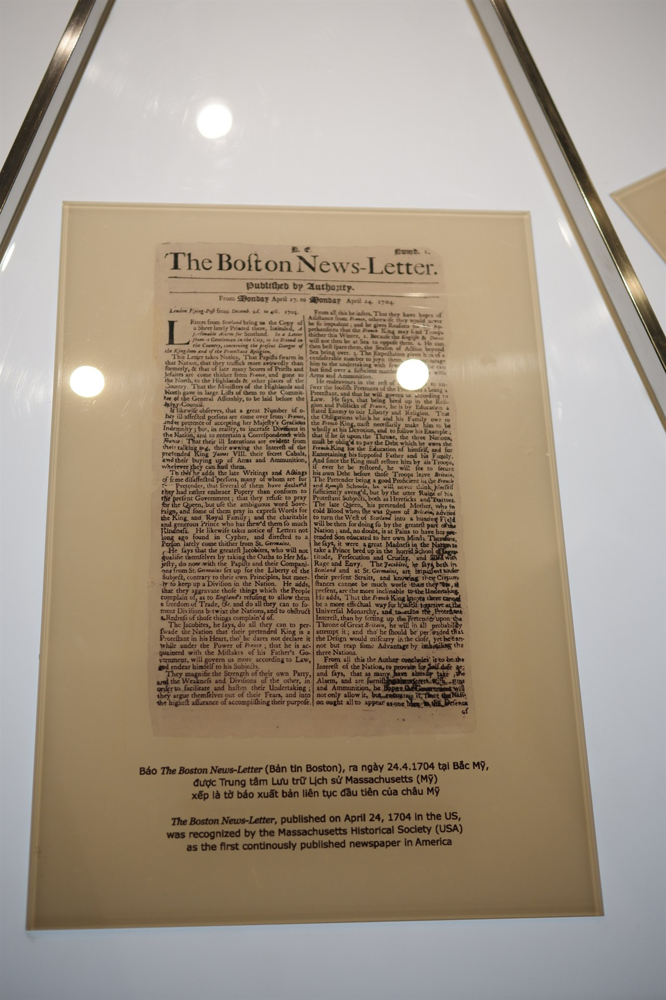
Được Trung tâm Lưu trữ Lịch sử Massachusetts (Mỹ) xếp là tờ báo xuất bản liên tục đầu tiên của châu Mỹ. Hiện vật quý giúp đối chiếu lịch sử phát triển truyền thông thế giới.
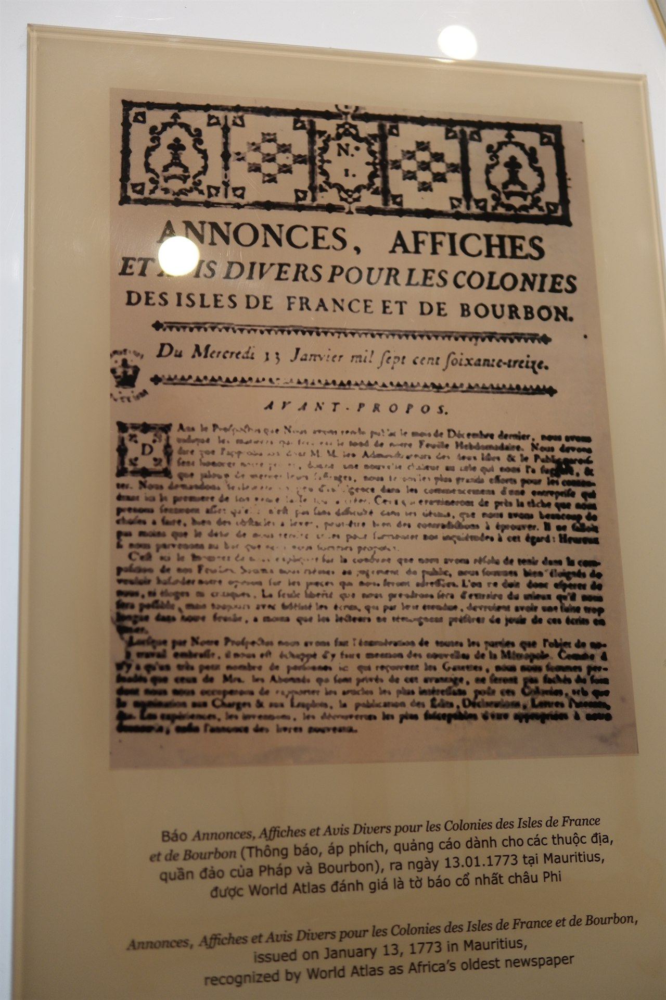
Ấn bản đặc biệt *Annonces, Affiches et Avis Divers* phát hành năm 1773 tại Mauritius, được World Atlas đánh giá là tờ báo cổ nhất từng xuất hiện tại lục địa châu Phi.
Những dấu mốc vàng son định hình diện mạo và sứ mệnh ngòi bút dân tộc qua hơn một thế kỷ
Tờ báo chữ Quốc ngữ đầu tiên của Việt Nam, mở đầu cho kỷ nguyên truyền thông hiện đại và khẳng định vị thế chữ Quốc ngữ trong đời sống văn hóa xã hội.
Danh nhân Đặng Huy Trứ mở tiệm ảnh "Cảm Hiếu Đường" tại phố Thanh Hà (Hà Nội), đặt nền móng sơ khai cho nhiếp ảnh báo chí và tư liệu hình ảnh nước nhà.
Xuất bản tại Hà Nội dưới sự dẫn dắt của học giả Nguyễn Văn Vĩnh, có đóng góp to lớn trong việc phổ cập văn xuôi chữ Quốc ngữ và giới thiệu văn minh phương Tây.
Tờ báo đầu tiên của phụ nữ Việt Nam do nữ sĩ Sương Nguyệt Anh (con gái nhà thơ Nguyễn Đình Chiểu) làm chủ bút, cổ vũ bình đẳng giới và nâng cao dân trí nữ lưu.
Ngày 21/6/1925, lãnh tụ Nguyễn Ái Quốc sáng lập báo Thanh Niên tại Quảng Châu, truyền bá chủ nghĩa Mác - Lênin vào Việt Nam, trở thành Ngày Báo chí Cách mạng Việt Nam.
Các nhà báo cầm bút và cầm súng, in ấn báo giữa rừng sâu chiến khu Việt Bắc, bám sát chiến hào Điện Biên Phủ và Trường Sơn vì độc lập tự do của Tổ quốc.
Bước vào kỷ nguyên số với truyền thông hội tụ, báo chí dữ liệu và công nghệ trí tuệ nhân tạo, tiếp nối sứ mệnh phụng sự đất nước trong thời đại mới.
Cùng khám phá những câu hỏi thú vị để kiểm tra hiểu biết của bạn về các mốc son báo chí hào hùng!
Đang tải câu hỏi...
Bảo tàng hân hạnh đón tiếp các đoàn trường học, tổ chức, nhà nghiên cứu và du khách trong và ngoài nước
Tòa nhà Hội Nhà báo Việt Nam, Phố Dương Đình Nghệ, Phường Yên Hòa, Quận Cầu Giấy, Hà Nội.
Thứ Ba đến Chủ Nhật hàng tuần
Buổi sáng: 08:30 – 11:30 | Buổi chiều: 13:30 – 16:30 (Nghỉ Thứ Hai).
Miễn phí vé cho cựu chiến binh, người cao tuổi, học sinh dưới 10 tuổi. Hỗ trợ đón tiếp chu đáo các đoàn tham quan học tập.
Cung cấp ấn phẩm giới thiệu, tờ gấp chỉ dẫn và hệ thống màn hình số hóa tra cứu thông tin chi tiết từng hiện vật tại các tầng.
Điền thông tin bên dưới để nhận mã xác nhận và được chuẩn bị tiếp đón chu đáo nhất:
Mô tả hiện vật